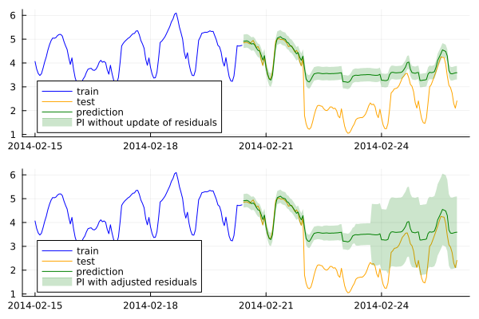

How to Conformalize a Time Series Model
Time series data is prevalent across various domains, such as finance, weather forecasting, energy, and supply chains. However, accurately quantifying uncertainty in time series predictions is often a complex task due to inherent temporal dependencies, non-stationarity, and noise in the data. In this context, Conformal Prediction offers a valuable solution by providing prediction intervals which offer a sound way to quantify uncertainty.
This how-to guide demonstrates how you can conformalize a time series model using Ensemble Batch Prediction Intervals (EnbPI) (Xu and Xie 2021). This method enables the updating of prediction intervals whenever new observations are available. This dynamic update process allows the method to adapt to changing conditions, accounting for the potential degradation of predictions or the increase in noise levels in the data.
The Task at Hand
Inspired by MAPIE, we employ the Victoria electricity demand dataset. This dataset contains hourly electricity demand (in GW) for Victoria state in Australia, along with corresponding temperature data (in Celsius degrees).
using CSV, DataFrames
df = CSV.read("./dev/artifacts/electricity_demand.csv", DataFrame)Feature engineering
In this how-to guide, we only focus on date, time and lag features.
Date and Time-related features
We create temporal features out of the date and hour:
using Dates
df.Datetime = Dates.DateTime.(df.Datetime, "yyyy-mm-dd HH:MM:SS")
df.Weekofyear = Dates.week.(df.Datetime)
df.Weekday = Dates.dayofweek.(df.Datetime)
df.hour = Dates.hour.(df.Datetime) Additionally, to simulate sudden changes caused by unforeseen events, such as blackouts or lockdowns, we deliberately reduce the electricity demand by 2GW from February 22nd onward.
condition = df.Datetime .>= Date("2014-02-22")
df[condition, :Demand] .= df[condition, :Demand] .- 2Lag features
using ShiftedArrays
n_lags = 5
for i = 1:n_lags
DataFrames.transform!(df, "Demand" => (x -> ShiftedArrays.lag(x, i)) => "lag_hour_$i")
end
df_dropped_missing = dropmissing(df)
df_dropped_missingTrain-test split
As usual, we split the data into train and test sets. We use the first 90% of the data for training and the remaining 10% for testing.
features_cols = DataFrames.select(df_dropped_missing, Not([:Datetime, :Demand]))
X = Matrix(features_cols)
y = Matrix(df_dropped_missing[:, [:Demand]])
split_index = floor(Int, 0.9 * size(y , 1))
println(split_index)
X_train = X[1:split_index, :]
y_train = y[1:split_index, :]
X_test = X[split_index+1 : size(y,1), :]
y_test = y[split_index+1 : size(y,1), :]Loading model using MLJ interface
As our baseline model, we use a boosted tree regressor:
using MLJ
EvoTreeRegressor = @load EvoTreeRegressor pkg=EvoTrees verbosity=0
model = EvoTreeRegressor(nrounds =100, max_depth=10, rng=123)Conformal time series
Next, we conformalize the model using EnbPI. First, we will proceed without updating training set residuals to build prediction intervals. The result is shown in the following figure:
using ConformalPrediction
conf_model = conformal_model(model; method=:time_series_ensemble_batch, coverage=0.95)
mach = machine(conf_model, X_train, y_train)
train = [1:split_index;]
fit!(mach, rows=train)
y_pred_interval = MLJ.predict(conf_model, mach.fitresult, X_test)
lb = [ minimum(tuple_data) for tuple_data in y_pred_interval]
ub = [ maximum(tuple_data) for tuple_data in y_pred_interval]
y_pred = [mean(tuple_data) for tuple_data in y_pred_interval]We can use partial_fit method in EnbPI implementation in ConformalPrediction in order to adjust prediction intervals to sudden change points on test sets that have not been seen by the model during training. In the below experiment, samplesize indicates the batch of new observations. You can decide if you want to update residuals by samplesize or update and remove first n residuals (shift_size = n). The latter will allow to remove early residuals that will not have a positive impact on the current observations.
The chart below compares the results to the previous experiment without updating residuals:
sample_size = 10
shift_size = 10
last_index = size(X_test , 1)
lb_updated , ub_updated = ([], [])
for step in 1:sample_size:last_index
if last_index - step < sample_size
y_interval = MLJ.predict(conf_model, mach.fitresult, X_test[step:last_index , :])
partial_fit(mach.model , mach.fitresult, X_test[step:last_index , :], y_test[step:last_index , :], shift_size)
else
y_interval = MLJ.predict(conf_model, mach.fitresult, X_test[step:step+sample_size-1 , :])
partial_fit(mach.model , mach.fitresult, X_test[step:step+sample_size-1 , :], y_test[step:step+sample_size-1 , :], shift_size)
end
lb_updatedᵢ= [ minimum(tuple_data) for tuple_data in y_interval]
push!(lb_updated,lb_updatedᵢ)
ub_updatedᵢ = [ maximum(tuple_data) for tuple_data in y_interval]
push!(ub_updated, ub_updatedᵢ)
end
lb_updated = reduce(vcat, lb_updated)
ub_updated = reduce(vcat, ub_updated)
Results
In time series problems, unexpected incidents can lead to sudden changes, and such scenarios are highly probable. As illustrated earlier, the model’s training data lacks information about these change points, making it unable to anticipate them. The top figure demonstrates that when residuals are not updated, the prediction intervals solely rely on the distribution of residuals from the training set. Consequently, these intervals fail to encompass the true observations after the change point, resulting in a sudden drop in coverage.
However, by partially updating the residuals, the method becomes adept at capturing the increasing uncertainties in model predictions. It is important to note that the changes in uncertainty occur approximately one day after the change point. This delay is attributed to the requirement of having a sufficient number of new residuals to alter the quantiles obtained from the residual distribution.
References
Xu, Chen, and Yao Xie. 2021. “Conformal Prediction Interval for Dynamic Time-Series.” In, 11559–69. PMLR. https://proceedings.mlr.press/v139/xu21h.html.